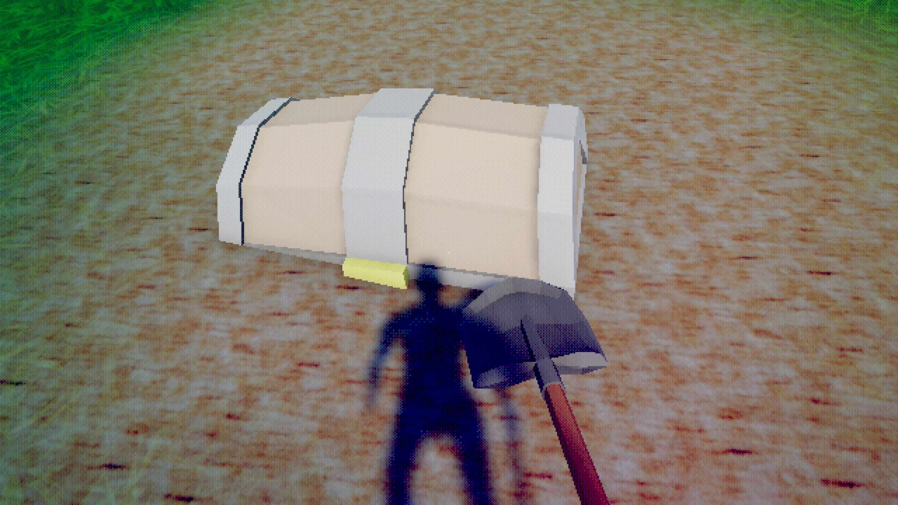

Stranger's Path
Stranger's Path was developed over the course of my Immersive Media Technologies class, delivered across three major milestones: a cutscene, a tutorial sequence, and a polished release build. It is a short 3D game built in Unity that follows a stranger arriving in an unfamiliar town, gradually orienting themselves through exploration and interaction.
Gameplay
The game is played from a first-person perspective. The tutorial sequence teaches the player WASD movement and E-key interaction through guided prompts integrated into the environment. A sprint mechanic is introduced when the player must chase after their hat as it is caught by the wind, creating a natural escalation from quiet exploration to active engagement.
Development Process
- Unity Timeline for cutscene choreography and camera animation
- Terrain and foliage painting to build the town environment
- Interactable objects with contextual prompts and feedback
- Physics systems including triggers, rigidbodies, and raycasting for player interaction and environmental mechanics
Outcome
Stranger's Path was submitted to Itch.io as a polished prototype. The final build combined a narrative intro delivered through the cutscene, a guided tutorial that taught core mechanics in context, and a set of interactive activities that let the player engage with the town at their own pace.